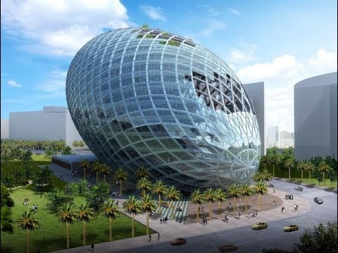

The image shows the Cybertecture Egg, a distinctive commercial building in Mumbai, India.
Why Visit the Cybertecture Egg in Mumbai, India?
A Modern Marvel in the Heart of Mumbai's Innovation Hub
🏙️ 1. Icon of Futuristic Architecture
- The Cybertecture Egg is a symbol of innovation and smart design.
- Designed by architect James Law — shaped like a giant egg of glass and steel.
- Represents: Sustainability, Technology, Creativity.
- A must-see for lovers of modern architecture and cutting-edge engineering.
🌱 2. Green & Smart Building
- Features energy-efficient systems, water recycling, and smart lighting.
- Eco-conscious design focused on reducing environmental impact.
- One of India’s "intelligent buildings" blending technology with wellness.
📸 3. Perfect for Photography & Sightseeing
- Its egg-shaped design makes it stand out in Mumbai’s skyline.
- Ideal for travel bloggers, Instagrammers, and architecture fans.
- Stunning night lighting offers beautiful photography opportunities.
🧠 4. Innovation Meets Business
- Located in Andheri East – Mumbai’s commercial and tech hub.
- Hosts startups, global companies, and creative firms.
- Experience how India is building smart cities and sustainable offices.